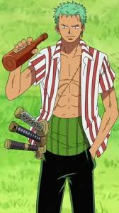
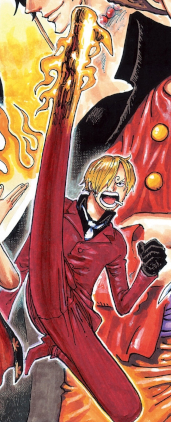
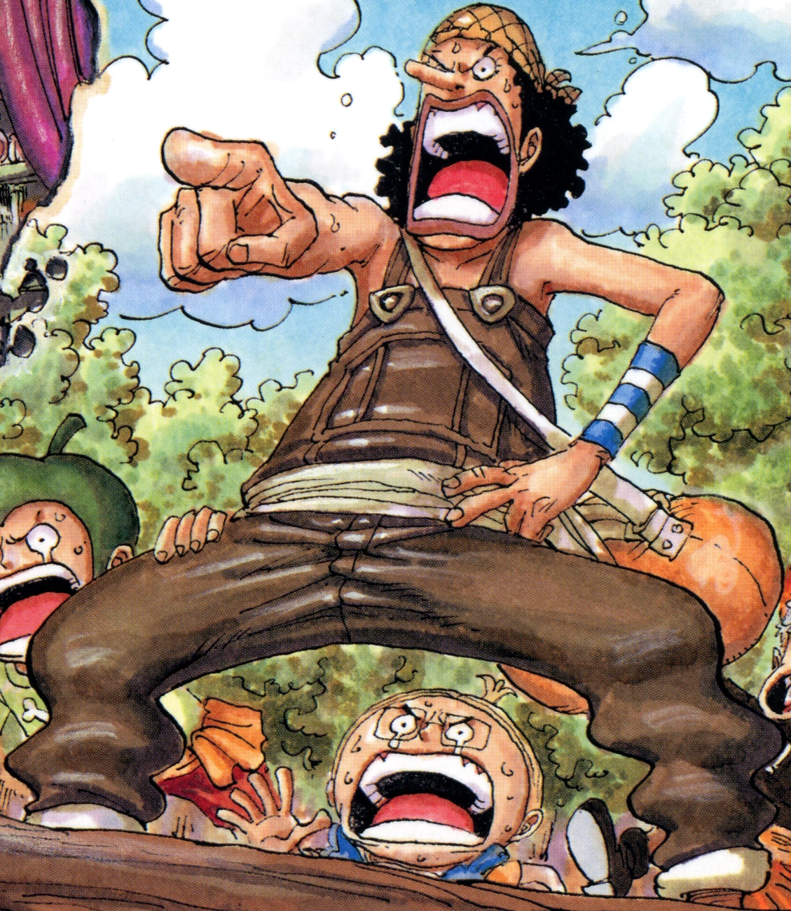
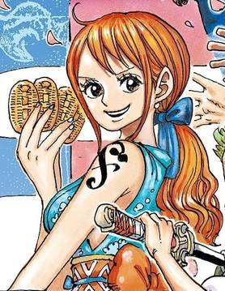
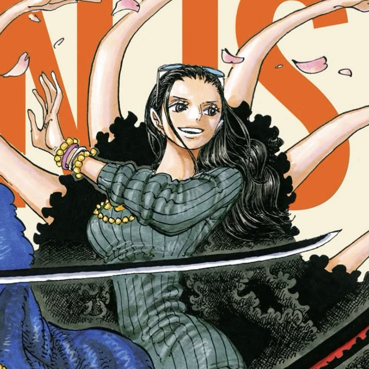
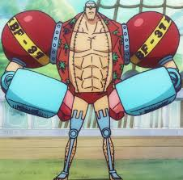
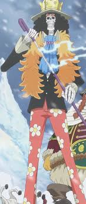
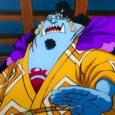

Luffy is the captain of the Straw Hat Pirates and the strongest in the crew. He has a current bounty of 3,000,000,000 Berries (Berries is the standard currency in the One Piece world).
His dream is to become king of the pirates, which he can become by finding the One Piece. He is also an emperor of the sea (Yonko).
His abilities include:
The Human-Human fruit: Model Nika (Nika is the sun god in One piece, also known as Joyboy) It transforms him into rubber and allows him to fight freely using his imagination
Armament Haki: This type of haki hardens the the user's body/any weapons they might use. This can be used both defensively and offensively.
Observation Haki: This type of haki heightens the user's senses and allows them to "sense" attacks before they are hit.
Conqueror's Haki (also known as Supreme Haki, or the colour of the supreme kind): This type of haki is the most powerful and rare form of Haki. It allows the user to knock down enemies that are not worth their time.
Roronoa Zoro

Zoro's Eyecatcher:
Zoro is the right-hand man of Luffy and the swordsman of the ship. He is the strongest in the crew after Luffy and has a concurrent bounty of 1,111,000,000 Berries.
His dream is to become the strongest swordsman in the world and he can achieve this by defeating Mihawk (the strongest concurrent swordsman in the world).
His abilities include:
Wado Ichimonji: Zoro's primary sword. It is one of the 21 great grade swords given by his master.
Sandai Kitetsu: Another one of zoro's swords. This was given to him in loguetown and is one of the Grade Famous Blade but is cursed.
Enma: This is Zoro's third sword and is one of the 21 great grade swords. It was given by hiyori as an exchange for shusui
Three-Sword Style: Zoro can use 3 swords at the same time. In this style, he can attack from multiple angles simultaneously.
Armament Haki: Zoro can use Armament Haki to harden his body and weapons, making his attacks more powerful.
Observation Haki: Zoro can use Observation Haki to sense his opponents' movements and intentions.
Sanji

Sanji's Eyecatcher:
Sanji is the left-hand man of Luffy and the cook of the ship. His power is matched with Zoro and his concurrent bounty is 1,032,000,000 Berries.
His dream is to find the All-Blue. The All-Blue is a sea where all of the currents of all the oceans meet. Thus, all the different fishes in it.
His abilities include:
Observation Haki: It allows Sanji to sense his opponents' moves and dodge
Armament Haki: Sanji uses this type of Haki to strengthen his legs and make his kicks more deadly.
Genetic Modifications: Sanji has a dormant Germa gene which was awakened by using his raid suit. It makes his skin more durable and increases his healing factor.
Black Leg Style: Sanji uses this style by using aramament on his leg and settings his legs on fire by spinning at great speeds.
Usopp

Usopp's Eyecatcher:
Usopp is the sniper of the Straw Hat Pirates and his dream is to become a great warrior of the sea. He has a concurrent bounty of 500,000,000 Berries.
Usopp also wants to meet his dad (Yassop) who is part of the Red-Haired Pirate Crew.
His abilities include:
Observation Haki: Heightens his senses and lets him sense his enemies from far away (without even being able to see them)
Lying: Usopp is great at lying and sometimes fools even the smartest of opponents. Sometimes his bluff turn into reality though.
Weapon Crafting: Usopp is very skilled at crafting weapons, he doesn't just make weapons for himself, he also made a weapons for Nami.
Kabuto: Kabuto is Usopp's primary weapon, He first used it to wage war against the world government as the alias "Sogeking"
Nami

Nami's eyecatcher:
Nami is the navigator of the crew and her dream is to curate a map for the entire One Piece world.
She has a concurrent bounty of 366,000,000 Berries.
Her abilities include:
Clima Tact: A weapon created by Usopp that allows Nami to manipulate the weather.
Pickpocketing Skill: She has great pickpocketing skills. So much so that her nickname is the CatBurglar.
Chopper
Chopper's Eyecatcher:
Chopper is the Doctor of the ship. His dream is to be able to cure any disease in the world.
Chopper has a concurrent bounty of 1,000 Berries. He has such a low bounty because he is the cutest character and the navy take pity on him.
His abilities include:
Human-Human Fruit: He was a normal reindeer until he ate the fruit, which gave him powers to transform into different hybrids forms.
Zoolingualism: Since chopper belongs to the animal kingdom, he can talk to animals and humans. So he can be an interpreter between humans and animals.
Rumble Ball: Chopper used to use this ball to transform into several forms but after the timeskip. He only needs one rumble ball to transform into monster point (choppers strongest transformation).
Robin

Robin's Eyecatcher:
Robin is the archeologist of the crew. Her dream is to discover the events that occured in the lost era.
Robin has a concurrent bounty of 930,000,000 Berries
Her abilities include:
Flower-Flower Fruit: This fruit allows Robin to sprout any part of her body in a certain radius of her.
Fish-man Karate: Robin knows a little fish-man karate which is the type of karate that fish-man species excel in.
Franky

Franky's Eyecatcher:
Franky is the shipwright of the crew. His dream is to watch his ship sail across all the seas
Franky has a concurrent bounty of 394,000,000 Berries
His abilities include:
Cyborg Body: He made different modification to his body, turning his different body parts into weapons and some to useful tools the strawhats might need along the journey.
Weaponry: Franky is very skilled at making weapons out of basically anything. He usually prefers making big weapons.
Brook

Brook's Eyecatcher:
Brook is the musician of the crew. His dream is to meet Laboon (his long lost whale friend).
Brook has a concurrent bounty of 383,000,000 Berries.
His abilities include:
Revive-Revive Fruit: This fruit allowed Brook to revive himself once he died. However his soul didn't find his body soon enough and everything except his bones had decayed making him just a skeleton.
Soul Solid: This is the name of Brooks cane sword. He coats the sword with the aura of his soul, freezing it in the process.
Milk Healing Factor: Since Brook is a skeleton, he can heal instantaneously just by consuming milk.
Jinbe

Jinbe's Eyecatcher:
Jinbe is the helmsman of the crew (Im still at dressrosa so I dont know much about Jinbe)
Jinbe has a concurrent bounty of 1,100,000,000 Berries.
His abilities include:
Observation Haki: This power has allowed Jinbe to sense the presence of others including other peoples Haki bursts.
Armament Haki: Jinbe is extremely skilled in Armament Haki. He is one of the few people who can use full body armament haki.
Fishman Karate: Jinbe is extremely skilled in Fishman Karate. He was a child prodigy and is so advanced that he doesn't even need to make direct contact with his opponent to send them flying.
Author note: There are way too many characters in one piece and I got bored after writing about the strawhats. So if you want to make this website look better you are free to do so. Just make a pull request once you're done.